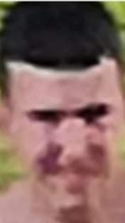

Som mladý muž, mám 16 rokov a narodil som sa 24. januára 2007.
Pochádzam z malej dediny na okraji Slovenska, v okrese Čadca, menom Zborov nad Bystricou, kde aj momentálne bývam.
Chodil som na Základnú Školu v Zborove nad Bystricou, celých 9 rokov.
Keď mi bolo 15, nastúpil som v septembri roku 2022 na Strednú Priemyseľnú Školu v Kysuckom Novom Meste, odbor IT, kde som dodnes.
Som introvert, perfekcionista a keď mi niečo veľmi nesedí, tak to urobím nanovo.
Nie som veľmi spoločenský, radšej som osamote pri svojej hudbe, tam je pokoj a nie som príliš často rušený. Ale to neznamená, že nemôžem byť v spoločnosti.
Nechodím takmer vôbec von, som skoro stále doma. Preto robím domáci tréning a občas si doprajem ľadovú sprchu.
Priateľku momentálne nemám a neprosím si ju, možno inokedy.
V mojom prostredí pracujem v čistote a upratujem si plochu na počítači tak často, ako upratujem izbu, asi raz do týždňa.

Zbožňujem hranie počítačových hier, aj tých na mobilných zariadeniach.
Zaujímam sa o počítačovú vedu, IT, počítačový hardware, operačné systémy Linux a Windows, a programovanie v jazykoch HTML, CSS, JAVASCRIPT a JAVA.
V súčasnosti ma zaujalo etické hackovanie v KaliOS.
Pri používaní počítačov vždy používam angličtinu, aj na predvolenej klávesnici.
Môžeme povedať, že moja angličtina je na úrovni B2.
Mám skúsenosti s opravou mobilov a menšími úpravami webových stránok.
Taktiež viem upravovať fotografie v Photoshop-e.
Videá v Premiere Pro, a mám za sebou začiatočnícke skúsenosti s ďalšími Adobe programmi, ako sú Lightroom, InDesign, XD, Dreamwiewer a Character Animator.
Vo Word-e, PowerPoint-e, Excel-e a celkovo v rámci Office365 sa pohybujem pokročile.
Počas letných prázdnin som robil vnútorné sadrové omietky (promo: Omietky Kubala), a tak si zarábam peniaze, ako sa hovorí, na "horšie" a taktiež možno aj lepšie časy.
